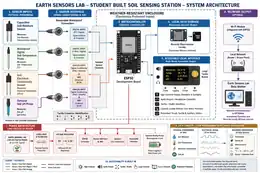
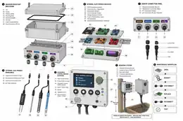
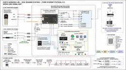

Build to learn
QUESTION → DESIGN → BUILD → CALIBRATE → DEPLOY → OBSERVE → RECORD → INTERROGATE → REPRESENT → SHARE → REDESIGN.
An accessible Earth-to-space observatory where students build instruments, work with authoritative public data, compare signals, interrogate evidence, and share what they learn.
Mixed-ability student cohorts build instruments that observe soil, water, living systems, atmosphere, vibration, sound, light, electromagnetic phenomena and the sky. They also work with external scientific data—from earthquakes and space weather to satellite observations and small-body ephemerides—so local measurements can be understood in context.

QUESTION → DESIGN → BUILD → CALIBRATE → DEPLOY → OBSERVE → RECORD → INTERROGATE → REPRESENT → SHARE → REDESIGN.
Garden-scale instruments sit beside regional, planetary and astronomical datasets. Students learn what can be compared, what cannot, and why provenance and uncertainty matter.
Each instrument dossier includes scientific questions, curriculum, parts/BOM, schematics, build sequence, calibration, data model, uncertainty rules, accessible representations, installation behavior, public workshop material and a Schema Card.

Soil, water, plants, biodiversity, vibration and acoustic sensing.
Weather, air quality, light/UV, microclimate, solar/wind generation and storage.
Radio environment, magnetometry, spectroscopy and space-weather context.
Optical observing, radio astronomy, near-Earth objects and interstellar visitors.
These are the developed ESL visuals. Concept illustrations are labeled as concepts; technical images point back to written engineering documentation where that documentation is authoritative.



ESL does not stop at local hardware. External scientific feeds are treated as another instrument family. Source, retrieval time, units, reference frame, quality state and uncertainty stay attached to the record.
LOCAL INSTRUMENTS EXTERNAL SCIENTIFIC SOURCES
soil · vibration · weather NASA/JPL · NOAA · USGS · satellites
\ /
\ /
NORMALIZE + KEEP PROVENANCE
|
OMOLUABI RULES
|
visual · text · audio · tactile outputs
Within this architecture, Omoluabi is the evidence-and-governance layer: trace the observation to source, calibration and protocol; surface contradictions and missing evidence; preserve uncertainty; keep human judgment visible.
Every instrument curriculum can connect to relevant public datasets, with field mapping, cadence, provenance, failure modes and comparison questions documented.
ESL distinguishes instrument faults, data-feed failures, environmental anomalies and candidate scientific events. Correlation does not become causation automatically.
ESL is understandable on its own, but it is not isolated. Each sibling project contributes a distinct method or research context; links explain the relationship rather than assuming visitors already know the ecosystem.
Shared public-interest systems method: Operations of Care, Rule-Based Intelligence, Accessibility as Architecture and Public Knowledge Stewardship.
Connects observations to provenance, calibration, sources, contradictions, missing evidence, accessible alternatives and human review.
Audits the kinds of digital and multimodal interfaces ESL produces, while preserving the requirement for human and disabled-user review.
Borrowed Function in the Garden explores interdependence through outdoor soft sculpture: incomplete bodies become capable through shared tension, balance, support, flexible joints, wind and connection. Environmental sensing may inform future experiments, but Ìjóyà is not reduced to a scientific-data visualization.
A governed speculative archive where sensing, infrastructure, access, environmental systems and data survival can become future-facing narrative research. ESL scientific records and UMADA canon remain separate evidence domains.
Supports public learning about machine assistance, hallucination, source checking, uncertainty, privacy, accessibility and the necessity of human judgment.
These links are references and precedents, not claims of endorsement or partnership. They open separately so a visitor can investigate the source without losing the ESL page.
Horizons, orbital elements, close approaches, observability, fireballs and other Solar System Dynamics data.
A direct precedent for building instruments, making radio observations, analyzing data and participating in a broader observing community.
Programmatic earthquake catalogs and event metadata for comparing local vibration observations with authoritative seismic records.
Planetary K-index, solar radio flux and other geospace products that can contextualize electromagnetic and radio observations.
Source imagery will be used only when it comes from an authoritative source with a stable credit/license path; ESL will not substitute invented agency-style graphics.
An interstellar-object case study for open data, trajectory reconstruction, archival observations, uncertainty and accessible scientific visualization.
A known future flyby can anchor a multi-year student campaign: establish baselines, learn ephemerides, test anomaly-detection rules, prepare observation windows and build a public installation around a real planetary-science event.
The same observation can support numerical/text, visual, sonic, spoken, tactile or haptic representations where scientifically appropriate. APIs and interactive visualizations require structured text equivalents, keyboard access and explicit provenance—not only graphs.
Accessibility baseline · Visual accessibility inventory · Accessibility Audit Lab ↗